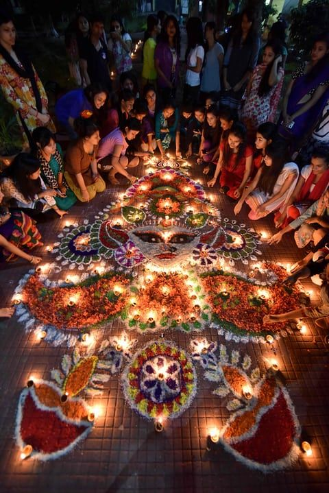
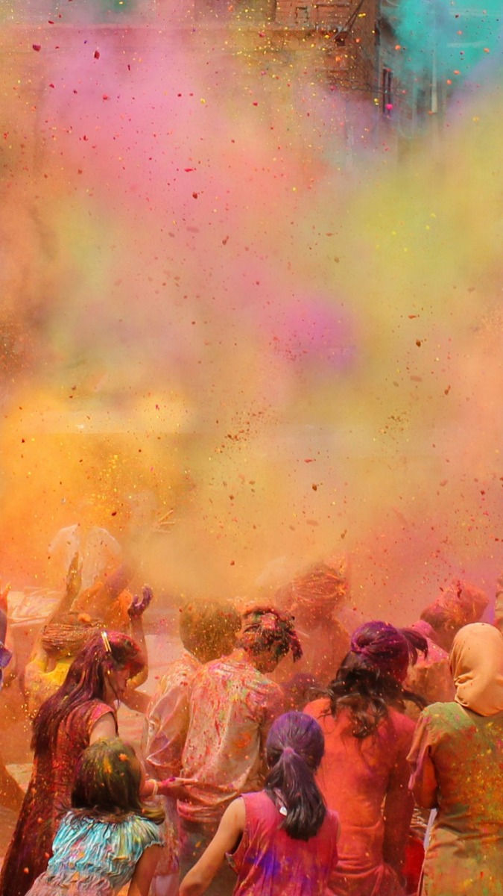
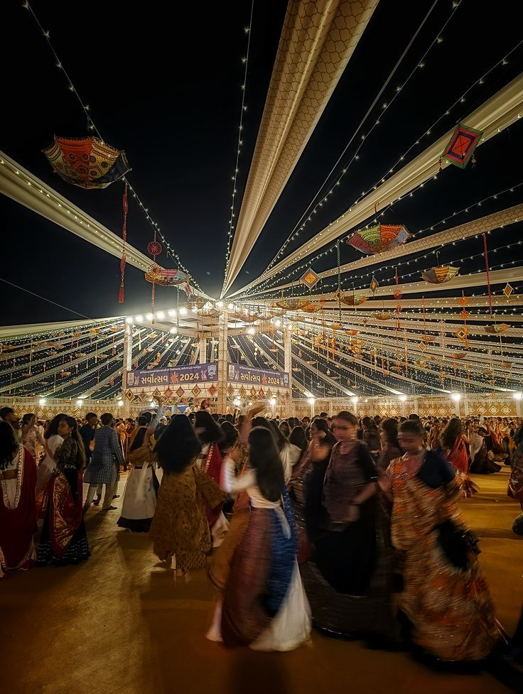
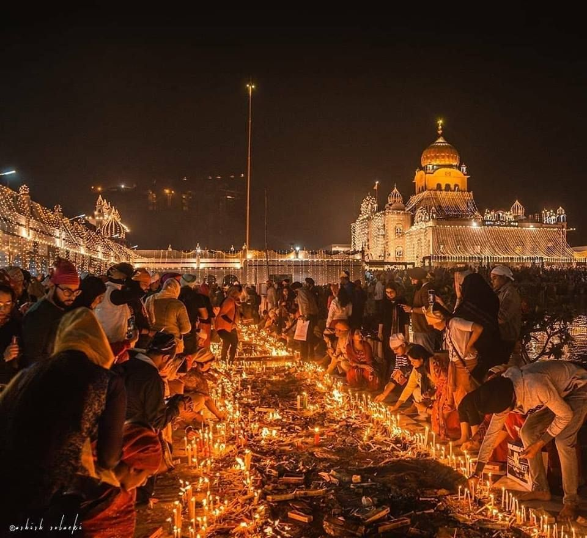

The Club of Indian Diaspora celebrates Indian culture through fun activities,
music, dance, food, and cultural presentations. Students can learn
about traditions, share the culture, and take part in exciting
festival celebrations throughout the year.
Cultural Activities
Learning traditional Indian dances
Listening to Indian music
Sharing traditional Indian food
Giving cultural presentations about India
Indian Festivals We Celebrate
Holi
Baisakhi
Diwali
Indian Diaspora Week
Indian Independence Day
Know more about Indian festivals!!
Diwali:
The Festival of Lights that celebrates the victory of
good over evil and light over darkness.

Holi:
The Festival of Colours where people celebrate spring
by throwing coloured powder and water.

Navaratri and Durga Puja:
A festival celebrating the goddess Durga
and the triumph of good over evil.

Dussehra:
A festival that celebrates Lord Rama’s
victory over the demon king Ravana.
Raksha Bandhan:
A celebration of the bond
between brothers and sisters.
Sikh Festivals:
Important celebrations in Sikhism such
as Vaisakhi and Guru Nanak Gurpurab.

Harvest Festivals:
Festivals like Pongal, Baisakhi, and
Onam that celebrate the harvest season.